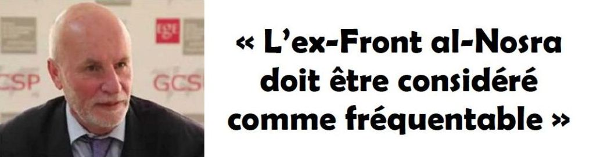
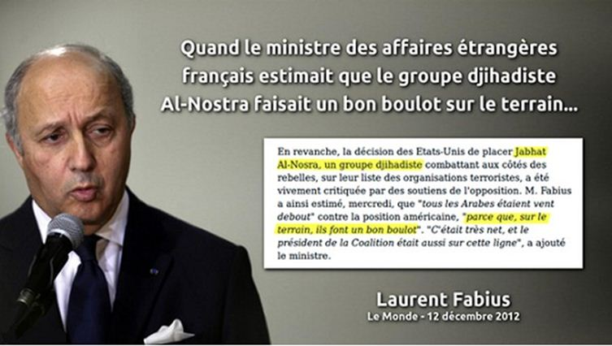
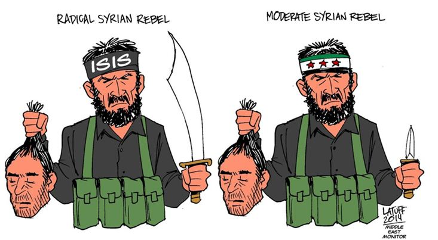

Les amis de la « révolution syrienne » nous disaient que Bachar Al-Assad était un tyran sanguinaire coupable d’atrocités sans nom. Ils clamaient que le peuple syrien dressé comme un seul homme aurait bientôt raison du « boucher de Damas ». La main sur le cœur, ils juraient que l’opposition démocratique congédierait les djihadistes, préparant la Syrie de demain. Huilée comme un roulement à billes, cette narration, en accréditant la fiction d’une révolution vertueuse, nous étourdissait de ses promesses. Rassurante pour l’esprit, elle distribuait les rôles selon un axe manichéen, confortant la bonne conscience occidentale et justifiant l’ingérence étrangère.
Pour peu, on aurait fini par y adhérer tant la désinformation sur le drame syrien était massive. On nous servit hier le « false flag » d’une attaque chimique attribuée en dépit du bon sens au gouvernement syrien. On nous vend aujourd’hui la photo accusatrice d’un enfant blessé, image cruelle désignant aussitôt le coupable, le frappant d’indignité à la vitesse trompeuse d’une émotion sur commande. Conflit entre le bien et le mal, la guerre civile syrienne se coule dans le moule d’un récit préfabriqué, elle se laisse happer par les fausses évidences d’une compassion sélective.
Mais cette fable politique semble avoir épuisé ses charmes. Le mythe d’une opposition laïque et démocratique s’est évanoui comme un écran de fumée. Il ne laisse derrière lui que des vapeurs d’alcool se dissipant peu à peu dans les salons feutrés des grands hôtels de Paris et Doha. Vautrée dans les fauteuils en moleskine, une coterie de patriciens déchus, de renégats vieillissants et de rombières appointées en dollars y devisa longuement sur l’avenir d’un pays qu’elle trahissait. Puis ces héros de pacotille sont partis, les uns après les autres, oubliant leurs rêves de gloire. De cette mauvaise farce, il ne reste rien d’autre que l’odeur rance d’un lendemain de fête triste.
Cette révolution-bidon s’est effondrée comme un château de cartes. Dans le fracas de sa chute, elle a laissé la place à une réalité tenace, de ces réalités qui émergent à marée basse, résistant obstinément aux tentatives de dénégation : la Syrie est un champ de bataille titanesque où s’opposent un Etat souverain soutenu par la majorité de la population et une armée de mercenaires lourdement armés par les maîtres du monde.
C’est l’affrontement sans pitié entre deux projets incompatibles. D’un côté, un nationalisme arabe séculier, respectueux des minorités, intransigeant sur l’intégrité territoriale et la souveraineté nationale. De l’autre, un islamisme rétrograde vendu au plus offrant, décidé à régler leur compte aux minorités récalcitrantes et à instaurer un Etat confessionnel fondé sur une charia rigoriste.
Cette réalité, il faut croire que les défenseurs les plus acharnés de la « révolution syrienne » ont fini par l’admettre. Car ils font leur deuil des modérés en costume-cravate et se rallient sans vergogne aux djihadistes. Le Front Al-Nosra ayant ravalé la façade en rompant son affiliation à la maison-mère, le tabou peut être transgressé. Au lendemain même du changement de label, voilà que commence l’opération de blanchiment. « Al-Nosra », ex-« Al-Qaida » rebaptisé « Fatah Al-Cham » ?
Des gens bien, des gens fréquentables ! Un grand chercheur français nous le dit : « Je pense que l’un des grands défis des Occidentaux, c’est d’être capable de mettre le curseur sur des forces politiques que l’on va considérer comme fréquentable, ou dont on va accepter qu’elles font partie de ce lot de forces politiques parmi lesquels les Syriennes et les Syriens choisiront, le jour venu. Et je pense que oui, l’ex-Front al-Nosra devrait faire partie des forces politiques considérées comme fréquentables », déclare François Burgat sur RFI le 9 août 2016.
Merveilleux pays que la France, où un chercheur du CNRS tresse des couronnes à une bande d’assassins revendiquant l’héritage d’Oussama Ben Laden. Fonctionnaire français s’exprimant sur une chaîne de service public, il affirme non seulement qu’ Al-Nosra, branche syrienne d’Al-Qaida jusqu’à la semaine dernière, est « fréquentable », mais que cette organisation responsable d’innombrables atrocités doit faire partie de « l’avenir de la Syrie ».
Les Syriens sauront gré à M. Burgat, n’en doutons pas, de cette touchante sollicitude pour leur avenir ! Mais il est vrai que pour M. Burgat et ses condisciples, la volonté du peuple syrien ne pèse pas lourd. Notre chercheur conseille aux Occidentaux davantage de bienveillance à l’égard des émules fraîchement reconvertis d’Al-Qaida pour vaincre Bachar Al-Assad. Quel brillant stratège ! Il doit ignorer que la collaboration entre Al-Nosra et Daech fonctionne déjà à plein régime dans la bataille d’Alep, et que ses amis terroristes n’ont pas attendu ses conseils pour recevoir l’aide précieuse des Occidentaux qui leur fournissent armes et munitions depuis belle lurette. Débordant d’empathie pour Al-Nosra reconvertie, M. Burgat ignore-t-il aussi que cette organisation criminelle a approuvé les attentats, commis par Daech le 13 novembre 2015, qui ont coûté la vie à 130 de nos compatriotes ? Nul doute que les familles des victimes apprécieront à leur juste valeur ses savantes recommandations.

Partager cette page